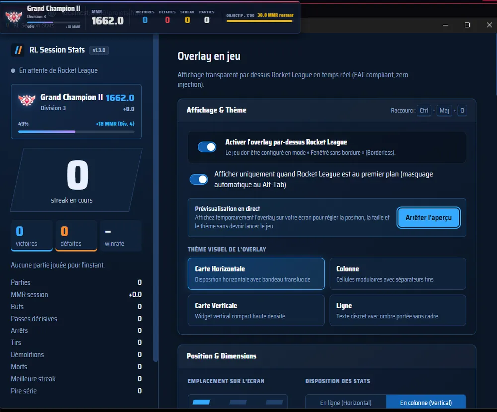

Suivi de session
MMR en direct, victoires, défaites, série, objectif de session et écart de MMR après chaque match.
Fiche projet
Statistiques de session et radar de lobby pour Rocket League, dans une seule application. Aucune injection : compatible Easy Anti-Cheat.
01 — Principe
RL Tracker Suite réunit deux de mes projets, RL Session Stats et LobbyTracker, qui lisaient tous les deux la Stats API officielle de Rocket League. La fusion garde une seule version de ce qu'ils partageaient : connexion à l'API, détection du jeu, overlays et serveur OBS.
Aucune injection ni lecture de la mémoire du jeu : l'application lit seulement la Stats API locale et le journal du jeu, et ses overlays sont des fenêtres transparentes séparées.

02 — Fonctionnalités
MMR en direct, victoires, défaites, série, objectif de session et écart de MMR après chaque match.
Navigation jour par jour, courbe de MMR interactive, détail match par match et statistiques par mode de jeu.
Chaque joueur du match est recherché sur Tracker Network, adversaires d'abord, avec un cache SQLite de 24 heures.
Détection de smurfs (Smurf Index de 0 à 100), spécialistes du 1v1, gardiens, séries de défaites et anciens hauts rangs.
Un joueur déjà croisé est signalé, avec ton bilan contre lui et avec lui.
Plusieurs dispositions, couleurs, opacité, échelle, position sur une grille ou au glisser-déposer, masquage au coup d'envoi.
Les mêmes overlays en source navigateur, et des fichiers texte (MMR, victoires, série) pour les scènes.
Le compte Epic ou Steam est détecté à chaque lancement du jeu, et chacun garde sa propre session.
03 — Technique
04 — Démarrage
Fermer Rocket League, puis lancer RL Tracker Suite (installateur ou version portable).
Dans l'onglet Session Stats, cliquer sur « Activer la Stats API » : l'application trouve l'installation Epic ou Steam et règle la configuration du jeu, en gardant une sauvegarde.
Dans Rocket League, choisir le mode fenêtré sans bordure pour que les overlays s'affichent par-dessus le jeu.
Raccourcis : Ctrl+Maj+O pour l'overlay de session, Ctrl+Maj+L pour celui du lobby.
Compiler depuis les sources (Node.js 18+, Rust et les outils de compilation C++)
git clone https://github.com/NeyorDEV/rl-tracker-suite.git
cd rl-tracker-suite
npm install
npm run build